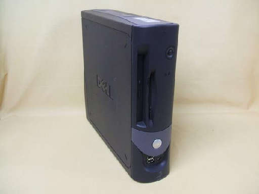
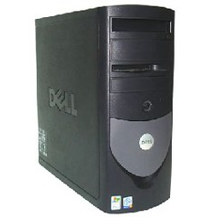

The Optiplex line was introduced in 1993. It is focused towards Corporate, Healthcare, Govermental and Education markets and is one of the most popular in it's class. Optiplex computers typically come with Intel processors such as celeron (at minimum), Pentium and i(x) Core
| Photo | Machine | Year Of Introduction | CPU | RAM | Hard Drive | Modem/Networking | Cache | Sound Card | GPU | Bundled Operating System | Bundled Software | Notes |
|---|---|---|---|---|---|---|---|---|---|---|---|---|
|  | GX50 | 2004? | Intel Celeron (1.2 to 1.4GHz, Possibly P6, Netburst or Pentium/Celeron M) | 128MB |
20GB |
14.4/28.8 Modem, Optional | Unknown | Unknown | Unknown | Microsoft Windows XP Professional |
Unknown |
|
|  | GX270 | 2004? | Intel Pentium 4 2.40GHz (PPGA478) | 512MB | 40GB | Gigabit Ethernet | 512KB L2 | Unknown | Intel Extreme Graphics 2 (864G IGPU) | Microsoft Windows XP Professional OR Windows 2000 Professional |
Unknown | Infamous for it's extremely high failure rates |